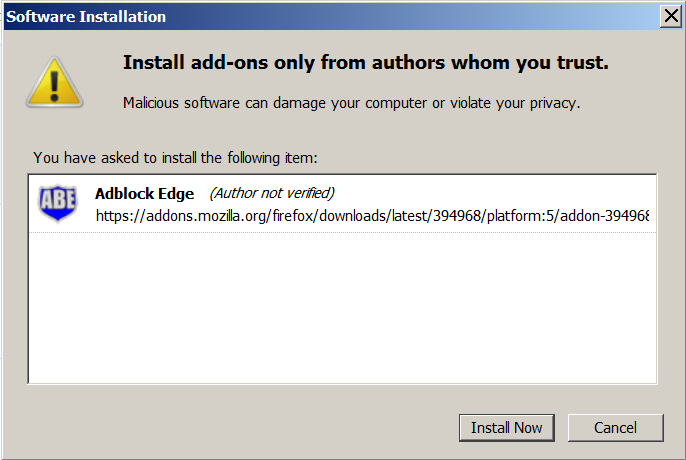
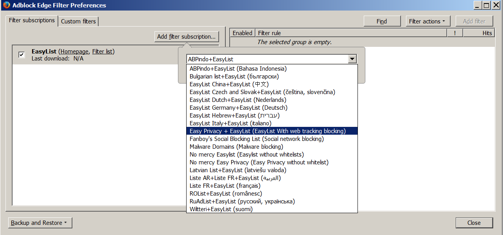

ABE Blocks Everything
Adblock Edge is a fork of the Adblock Plus version 2.1.2 extension for blocking advertisements on the web. This fork will provide the same features as Adblock Plus 2.X and higher but without "acceptable ads" feature.
In order to block ads, Adblock Edge requires the so-called filters to "tell" it which requests to block. Out of the box, Adblock Edge comes without any filters, but, it will offer you to add a filter subscription on first start. With these filters enabled, it can block specific requests from websites, usually the requests to serve an ad. Blocked ads often leave blank spaces or "Advertising Tags" on webpages. Adblock Edge is still able to remove these with a functionality called "element-hiding": based on certain specific characteristics, Adblock Edge is able to hide certain elements from the webpage.
If you use the Mozilla Firefox browser, click the install button on the Firefox installation page. Firefox will prompt you to allow Adblock Edge to install the add-on: Click on "Allow".

Firefox will start the installation of our ad block, and will ask you to confirm that you trust the author. Click on "Install Now" to add Adblock Edge to your Firefox browser.
You are now protected against all ads!
As previously described, Adblock Edge requires filterlists to block ads. By itself, Adblock Edge can only see the webpage you are loading, but has to be "told" by the filterlist which elements to block. When you install Adblock Edge for the first time, it will automatically subscribe you to a filterlist based on the language settings of your browser.
There are a two basic lists out there, EasyList and Fanboy's List. These two lists block the ads from the most popular (often English) websites. However, these lists do not block ads on less popular national websites. In the case that you, for example, come from Germany, you will have to subscribe to the national German filter list. In this case, this will be "EasyList Germany + EasyList". An overview of all the lists can be found here.
It is important to note that you should not add too many filterlists to Adblock Edge. This will slow down the adblocker, therefore, your browsing. As a rule of thumb, it is highly recommended to not use overlapping filterlists (e.g. choose either EasyList OR Fanboy's List).
You can also use filterlists to protect yourself against tracking, malware, social media tracking etc.
In Firefox select "Firefox" >> "Add-ons" (for Mac OS X / Linux, select "Tools" from the menubar >> "Add-Ons"), this will open your Firefox Add-ons Manager.
This will open the Adblock Edge Filter Preferences menu:
Please click on "Add filter subscription", and open the drop-down menu for the filterlist subscriptions to add new/more filters. Select the list you want to subscribe to, Adblock Edge automatically enable these lists by default. This menu only shows the most popular and recommended filters. Please go here for more filter lists.
It might happen that Adblock Edge prevents some site from functioning correctly. Usually, this is not a bug in Adblock Edge but a problem with the filters (or filter subscription) you are using, these filters tell Adblock Edge to block something that shouldn't be blocked. You verify this by temporarily disabling Adblock Edge, if this "fixes" the problem you are dealing with a bad filter.
If you found an advertisement that Adblock Edge doesn't block, please check first whether you are using the right filter subscription. For example, expecting a French filter subscription to block advertisements on a Bulgarian website is unrealistic you should add a Bulgarian filter subscription for that job. If the filter subscription is right, then the subscription maintainer is probably simply unaware of the problem and you should tell him.